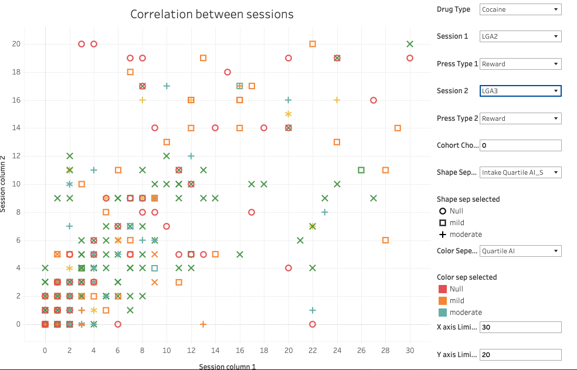
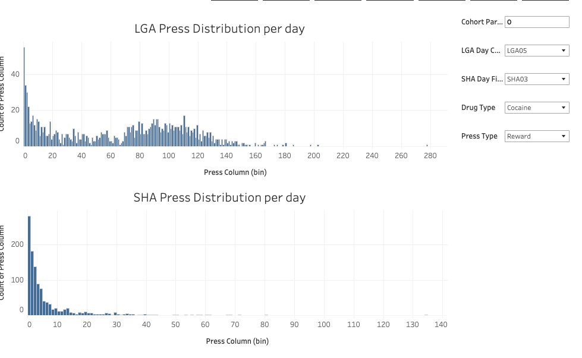
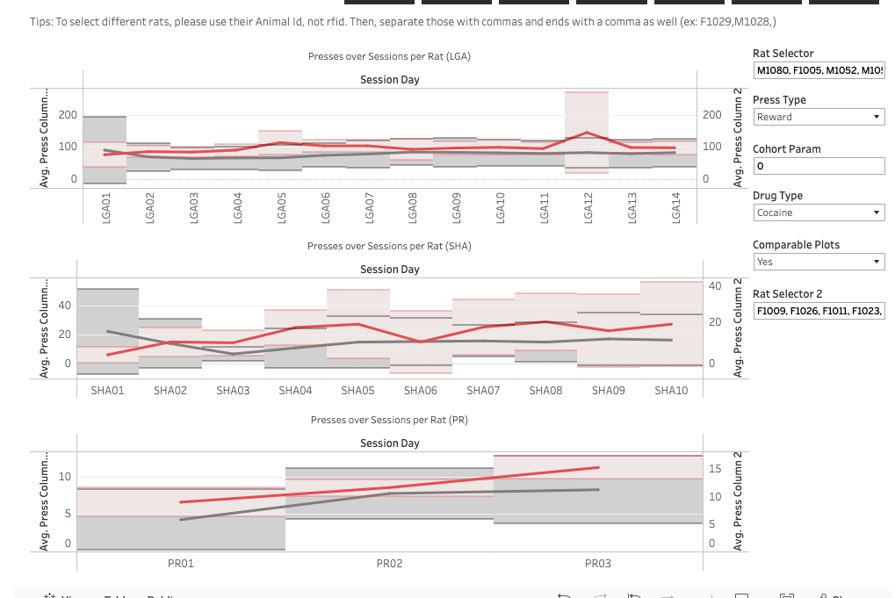

GWAS Database Dashboard
Tableau Dashaboard to show data distribution and create visualization for the publication using Azure database for George Lab's GWAS research.
Project Details / Background
This visualization allows the researcher to access different values of dependent variables and the distribution of them per database, cohort, and sex. Different types of visualization can be accessed by clicking on different buttons on the navigator bar and each visualization allows to filter and investigate specific rats per types of interest and separated by different visual marks such as color and shapes. There is the internal version of visualization that is accessible by only permitted users and this visualization is directly connected to the Azure Database. For the researcher outside of the lab who is interested, the nonsynchronous public version is published through Tableau Public.
I was in charge of developing this entire dashboard and still improving and adding features.
Image Gallery

Scatter plot to see if there is any correlcation between each sessions

Distribution of lever press which indicatees rats' addiciton level

Select each rat group to compare 2 differnet rat group and their lever press data